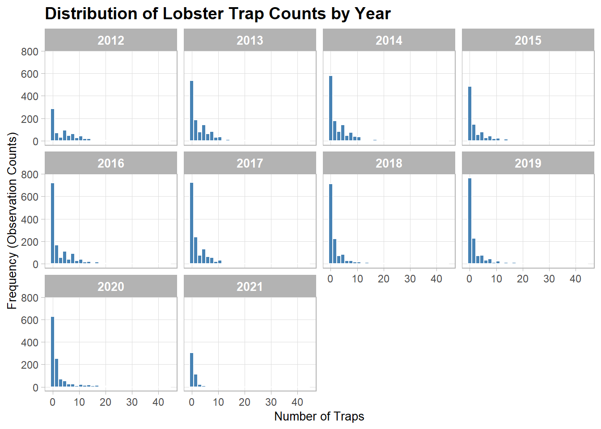

California spiny lobster (Panulirus interruptus)are important predators in southern California giant kelp forests. They are studied along the coast of the Santa Barbara Channel to understand their patterns in abundance, size and fishing pressure as these variables affect their role in kelp forest community dynamics. Fishing pressure is estimated from using trap counts collected during the lobster catch season (October-March).
In this project a dataset from 2012 from inside and outside Marine Protected Areas (MPAs) along the Santa Barbara Coast was collected to investigate differences between protected and non-protected areas. This analysis focuses on trap counts as a proxy for fishing pressure which may explain differences in lobster abundance and size observed in other parts of the dataset.
In this analysis, I examine how trap counts vary across sites and years to better understand patterns in fishing pressure and how they may differ across locations.
Data
The data used in this report come from the Santa Barbara Coastal LTER lobster fishing pressure dataset.
Source:
SBC LTER: Reef: Abundance, size and fishing effort for California Spiny Lobster (Panulirus interruptus), ongoing since 2012
The following objects are masked from 'package:stats':
filter, lag
The following objects are masked from 'package:base':
intersect, setdiff, setequal, union
library(ggplot2)library(tidyr)library(here)
here() starts at /Users/huongtrinh/tymmy-huong
# Read in trap dataset and replace missing valueslobster_traps <-read_csv(here::here("data", "Lobster_Trap_Counts_All_Years_20210519.csv")) %>%mutate(TRAPS =na_if(TRAPS, -99999))
Rows: 11071 Columns: 10
── Column specification ────────────────────────────────────────────────────────
Delimiter: ","
chr (6): FISHING_SEASON, SITE, SEGMENT_START, SEGMENT_END, OBSERVER, NOTES
dbl (3): YEAR, MONTH, TRAPS
date (1): DATE
ℹ Use `spec()` to retrieve the full column specification for this data.
ℹ Specify the column types or set `show_col_types = FALSE` to quiet this message.
Data Wrangling
To support interpretation of fishing pressure, trap counts were summarized by site and year to examine temporal changes across locations. In addition, observations from 2019 to 2021 were classified into “high” and “low” fishing pressure categories using a threshold of 8 traps, following the class exercise. These categories were then summarized by site to compare how frequently higher fishing pressure occurred across the study area.
Data Visualization
Figure 4: Distribution of Trap Counts by Year
It shows how lobster trap counts were distributed across years in the monitoring record.
distribution_of_trap_counts_by_year<-ggplot(data = lobster_traps, aes(x = TRAPS)) +geom_histogram(bins =30, fill ="steelblue", color ="white" ) +facet_wrap(~ YEAR, ncol =4) +labs(title ="Distribution of Lobster Trap Counts by Year",x ="Number of Traps",y ="Frequency (Observation Counts)" ) +scale_x_continuous(breaks =seq(0, 40, by =10) ) +theme_light() +theme(plot.title =element_text(size =14, face ="bold"),axis.title =element_text(size =10),axis.text =element_text(size =9),strip.text =element_text(size =10, face ="bold"),panel.grid.minor =element_blank() )# Display plotdistribution_of_trap_counts_by_year
Warning: Removed 116 rows containing non-finite outside the scale range
(`stat_bin()`).

#Save it as a PNG into the figs folderggsave(filename ="../figs/distribution_of_trap_counts_by_year.png",plot = distribution_of_trap_counts_by_year,width =10,height =6,dpi =300)
Warning: Removed 116 rows containing non-finite outside the scale range
(`stat_bin()`).
Figure 5: Temporal Trends in Trap Counts
It tracks total lobster trap counts at each site across the study period.
# Summarize trap counts by site and yearlobster_traps_summarize <- lobster_traps %>%group_by(SITE, YEAR) %>%summarise(TOTAL_TRAPS =sum(TRAPS, na.rm =TRUE), .groups ="drop")# Line and point plotlobster_traps_by_site_year<-ggplot(data = lobster_traps_summarize, aes(x = YEAR, y = TOTAL_TRAPS, color = SITE)) +geom_line() +geom_point() +labs(title ="Total Lobster Trap Counts by Site Over Time",x ="Year",y ="Total Trap Counts",color ="Site" ) +theme_light() +guides(color =guide_legend(nrow =2, byrow =TRUE)) +theme(plot.title =element_text(hjust =0.5, face ="bold", size =12),legend.position ="bottom",legend.text =element_text(size =9),legend.title =element_text(size =10) )# Display plotlobster_traps_by_site_year
Across both the lobster abundance/size data (Figures 1–3) and the fishing pressure data (Figures 4–6), clear spatial and temporal patterns emerge that suggest fishing pressure plays an important role in shaping lobster populations in the Santa Barbara Channel.
From the abundance and size analysis, lobster carapace lengths (Figure 1) show generally right-skewed distributions, with most individuals clustered in a moderate size range (approximately 70–100 mm), but with some larger individuals present at certain sites. In particular, sites such as NAPL and IVEE show a wider spread toward larger sizes compared to other locations, indicating that lobsters at these sites may be able to grow larger. Temporal trends in abundance (Figure 2) indicate that lobster counts fluctuate across years and vary substantially by site, with sites such as CARP and GOLB often showing higher total counts compared to others, suggesting spatial differences in population density. Additionally, the comparison of small versus large lobsters (Figure 3) demonstrates differences in size structure across sites, where some sites are dominated by smaller individuals while others contain a higher proportion of larger lobsters.
The fishing pressure analysis provides important context for interpreting these biological patterns. The distribution of trap counts by year (Figure 4) shows that most observations involve relatively low numbers of traps, but occasional spikes indicate periods of increased fishing activity. When summarized over time (Figure 5), sites such as CARP and GOLB consistently exhibit higher total trap counts than other locations, indicating that fishing effort is concentrated at specific sites rather than evenly distributed. Finally, the classification of fishing pressure into “high” and “low” categories (Figure 6) shows that CARP and GOLB experience a higher frequency of high fishing pressure, whereas sites such as IVEE and NAPL show fewer high-pressure observations, consistent with reduced fishing activity at those locations.
When these results are considered together, a clear relationship emerges between fishing pressure and lobster population structure. Sites with consistently higher fishing pressure (CARP and GOLB; Figures 5 and 6) correspond to sites where the proportion of larger lobsters is lower (Figure 3), suggesting that fishing activity may be removing larger individuals from the population. In contrast, sites with lower fishing pressure, including Marine Protected Areas (IVEE and NAPL; Figures 5 and 6), show evidence of larger individuals in Figure 1, indicating that reduced fishing allows lobsters to grow to larger sizes. Additionally, although sites such as CARP may show higher total abundance in Figure 2, this may reflect high recruitment or turnover rather than the presence of large, mature individuals.
Overall, this analysis suggests that fishing pressure is unevenly distributed across sites and is strongly associated with differences in both lobster size and abundance. By directly comparing fishing effort (Figures 4–6) with biological patterns (Figures 1–3), it becomes evident that higher fishing pressure is linked to fewer large lobsters and altered population structure, while lower fishing pressure—particularly in MPAs—supports larger individuals and potentially more stable populations. These findings highlight the importance of managing fishing effort and demonstrate the ecological value of Marine Protected Areas in maintaining healthy kelp forest ecosystems.